01. The Home screen & adding accounts
The Home screen lists all your accounts and their current verification codes. From here you can search, organize and copy codes, and add new accounts.
The Home screen
- Top bar
- The padlock locks JM Authenticator immediately. The gear opens Settings.
- Authentication Codes
- Shows how many accounts are enrolled. All codes are generated offline on your iPhone or iPad.
- Search codes
- Find an account by service or account name.
- View and order
- Switch between grid view and list view, or tap Reorder codes to arrange your accounts.
- Account cards
- Each card shows the service icon and name, the account name and the current code. When codes are hidden, they appear as dots until you reveal them.
- Copy and countdown
- The copy button copies the current code. The ring shows how many seconds remain before a new code appears.
- More actions
- The ••• button opens the account’s actions, such as viewing and editing details, adding it to Favorites or deleting it. Favorites are marked with a star.
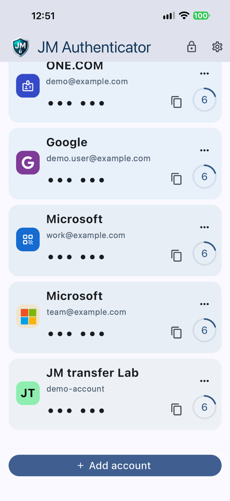
Opening Add an account
- On the Home screen, tap + Add account at the bottom. If you have no accounts yet, tap Add your first account.
- The Add an account sheet opens over the Home screen and shows four ways to add an account.
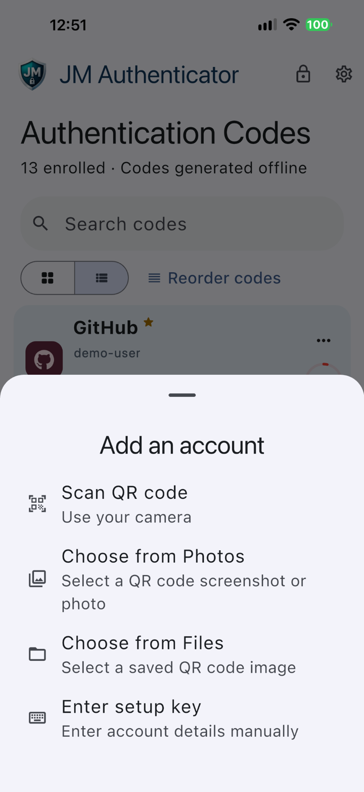
The four ways to add an account
When you turn on two-factor authentication for a service, it shows a setup QR code or a text setup key. Choose the option that matches what you have:
- Scan QR code — Use your camera
- Point the camera of your iPhone or iPad at the setup QR code shown by the service. Scanning stays on your device. Then continue with Confirming the account.
- Choose from Photos — Select a QR code screenshot or photo
- Use a screenshot or photo of the setup QR code that is already in your photo library. Then continue with Confirming the account.
- Choose from Files — Select a saved QR code image
- Select a QR code image saved in Files (PNG, JPEG or HEIC, up to 8 MB). Then continue with Confirming the account.
- Enter setup key — Enter account details manually
- Type the service name, account name and setup key yourself, as described in Entering a setup key.
Setup QR codes and setup keys contain your account secret. After adding an account, delete any QR code screenshots from Photos, including Recently Deleted.
Entering a setup key
Choosing Enter setup key opens Manual enrollment. Everything you enter stays on your device.
- In Service / issuer, enter the name of the service, for example the website or company.
- In Account name, enter the account you use with that service, usually your email address or username.
- Optionally, add a Descriptive label to tell similar accounts apart.
- Optionally, tap Change Icon to choose an icon for the account. By default, the icon is set automatically.
- Enter the setup key from the service in Base32 secret key. It uses the letters A–Z and the digits 2–7; spaces are allowed. The key is hidden as you type.
- Open Advanced TOTP settings only if the service asks for a different algorithm, code length or validity period. See Advanced TOTP settings.
- Tap Review and add, then continue with Confirming the account.
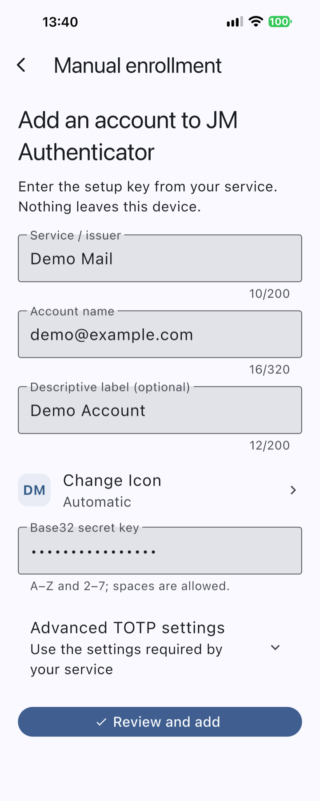
Advanced TOTP settings
Tap Advanced TOTP settings on the Manual enrollment screen to show three settings. Most services use the defaults shown here. Change them only when your service tells you to use different values.
- Algorithm — default HMAC-SHA1
- The cryptographic algorithm used to generate the codes. You can also choose HMAC-SHA256 or HMAC-SHA512, but only select them when your service explicitly requires it.
- Code length — default 6 digits
- How many digits each code contains. You can choose 6, 7 or 8 digits.
- Validity period (seconds) — default 30
- How long each code remains valid before the next one is generated. You can enter a value from 1 to 3600 seconds.
When the settings are correct, tap Review and add and continue with Confirming the account.
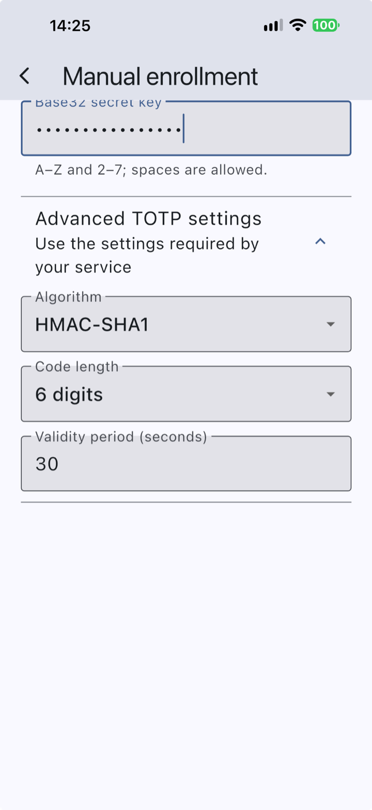
Confirming the account
- After you tap Review and add, Confirm enrollment shows the service, the account name, the descriptive label and the code settings — for example SHA1 · 6 digits · 30 seconds. When you add an account from a QR code, the app first shows Review QR enrollment, where you check the details and tap Review and add.
- Check that everything is correct:
- Review returns to the form so you can correct the information.
- Add account confirms the enrollment and saves the account. It then appears on the Home screen — see Your account is ready.
The dialog also reminds you to keep the service’s recovery codes in a safe place. JM Authenticator has no cloud recovery, so these codes and your encrypted backups are the way back into your accounts if you lose your device.
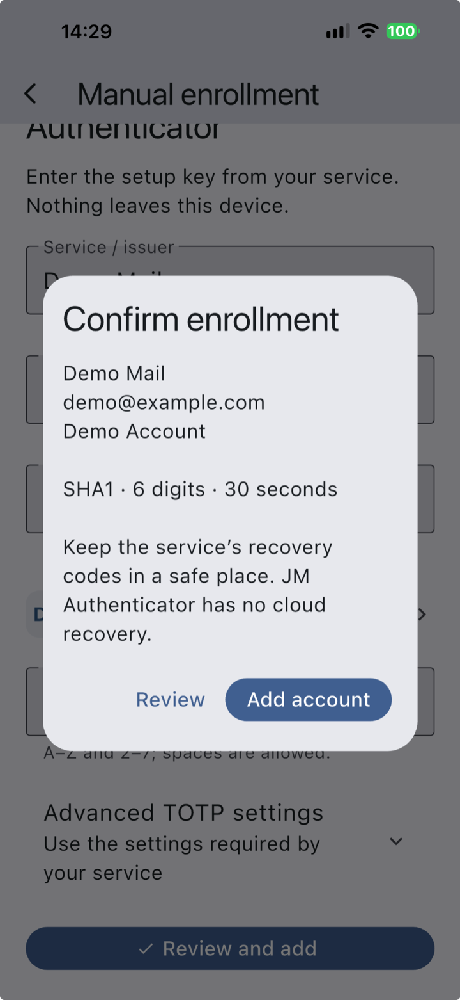
Your account is ready
After you tap Add account, JM Authenticator returns to the Home screen and shows the newly enrolled account. In this example, the Demo Mail card appears at the end of the list:
- Demo Mail
- The service name.
- demo@example.com
- The account name.
- Demo Account
- The descriptive label.
- DM icon
- An automatically generated account icon, created from the service name. You can change it later.
- Hidden dots
- The concealed authentication code. Tap it to reveal the code.
- Copy icon
- Copies the current code, so you can paste it into the service.
- Circular countdown
- The number of seconds the current code remains valid. The number in the screenshot is only an example.
- Three-dot menu
- Additional account actions, such as viewing and editing details, adding the account to Favorites or deleting it.
In this example, the six-digit verification code refreshes automatically every 30 seconds. Enter the current code when your service asks for it to finish turning on two-factor authentication.
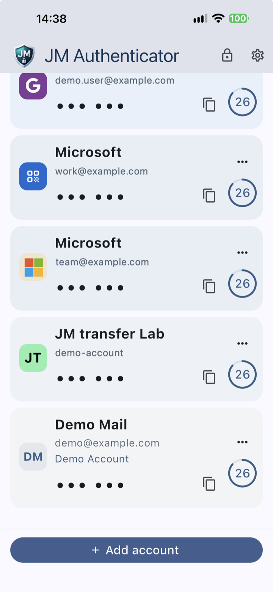
Standard otpauth TOTP setup codes are supported. Counter-based (HOTP) codes are not supported. Keep the service’s own recovery codes in a safe place, separately from JM Authenticator.
02. Security & app lock
JM Authenticator can require Face ID or your device passcode before it shows your accounts. All security options are on one screen: Home → Settings (gear icon) → Security & app lock.
Four settings work together:
- App Lock turns protection on: JM Authenticator requires authentication before it shows your accounts.
- Face ID (biometric authentication) is how you authenticate. You can also use your device passcode.
- Lock when returning to the app asks for authentication again after you leave JM Authenticator.
- Auto-lock after inactivity asks for authentication again after a period of inactivity, even when the app remains open.
Opening Security & app lock
- On the Home screen, tap the gear icon at the top right to open Settings.
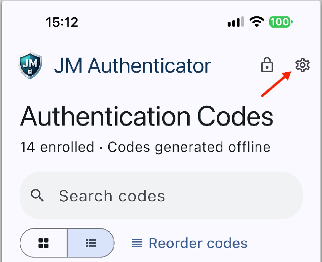
- In Settings, under Security, tap Security & app lock.
Next to the gear, the padlock icon locks JM Authenticator immediately.
The Security & app lock screen starts with Protect your codes and lists these settings from top to bottom:
App Lock
Require authentication to open JM Authenticator. When App Lock is on, JM Authenticator shows its lock screen and asks for Face ID or your device passcode before it shows your accounts. Turning App Lock on or off also asks you to authenticate.
Face ID
This card shows whether Face ID can be used. When it is available, it reads Face ID is available on this device and will be used to unlock the app. On iPhone and iPad models with Touch ID, the card shows Touch ID instead.
The authentication itself is performed by iOS. You can also unlock with your device passcode — for example, if Face ID does not recognise you or becomes unavailable. There is no bypass or remote reset, so keep your device passcode available.
Auto-lock after inactivity
Require authentication after a period of inactivity, even when the app remains open. Below this description is a drop-down where you choose how JM Authenticator handles inactivity. In the screenshot it is set to Use existing lock behavior.
Unlike Lock when returning to the app, which applies when you leave JM Authenticator and come back, auto-lock also applies while the app stays open. Both only ask for authentication while App Lock is on.
Lock when returning to the app
Require authentication after leaving JM Authenticator. When this and App Lock are on, the app asks for Face ID or your device passcode each time you come back to it from another app or the Home Screen.
After you unlock, JM Authenticator returns to the screen you were using, with any information you had entered but not yet saved — as long as the app kept running in the background. If iOS has closed the app, or you closed it yourself, it starts again on the Home screen.
Hide authentication codes by default
When enabled, authentication codes remain hidden until you tap to reveal them. Countdown timers remain visible. Hidden codes appear as dots on the Home screen. Tap a code to show it.
Security information
App Lock protects access. Learn about storage, clipboard privacy, and recovery limitations. Tap this section to expand it. It explains that:
- Storage — Your authentication secrets are stored locally using iOS Keychain protection. JM Authenticator does not send them to the developer. If you save an encrypted backup to a cloud storage provider, that provider may store the encrypted backup.
- App Lock limits — App Lock controls access within the app. It does not add biometric-bound encryption to the storage key, and a compromised device may bypass app controls.
- Device authentication — if Face ID changes or becomes unavailable, use your device passcode. Removing your device passcode may prevent unlocking until it is restored.
- Clipboard privacy — Copied codes are cleared from the clipboard within 30 seconds or when the code expires, subject to the device’s clipboard behavior. Other apps may keep copies of codes you paste into them.
- Recovery — keep each service’s recovery codes separately and use password-protected encrypted backups. No cloud backup is provided.
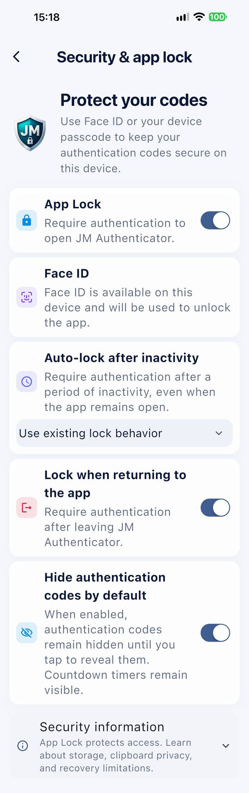
03. Use verification codes
JM Authenticator generates time-based verification codes locally on your iPhone or iPad, so they also work when your device is offline. Each code is valid for a short time and is then replaced automatically by a new one.
Understanding the Home screen
In List view, every account has its own card:
- Account name and identifier
- The service name in bold, with the account name below — for example GitHub and demo-user. A star marks a favorite.
- Hidden code
- When Hide authentication codes by default is on, codes appear as dots until you reveal them.
- Copy icon
- Copies the account’s current code.
- Countdown
- The ring shows how many seconds the current code remains valid.
When the countdown ends, JM Authenticator generates the next code automatically. You don’t need to refresh anything.
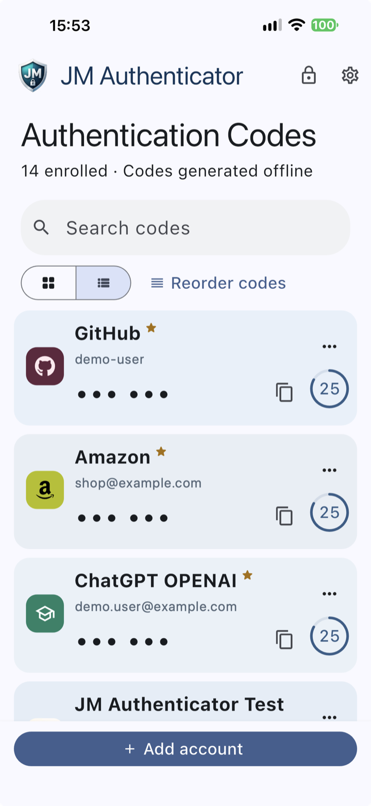
Revealing a verification code
- Tap the dots of the account whose code you need. The code appears.
- The codes of all other accounts stay hidden.
- The countdown shows how many seconds the code remains valid. When it ends, a new code is generated and hidden again until you tap it.
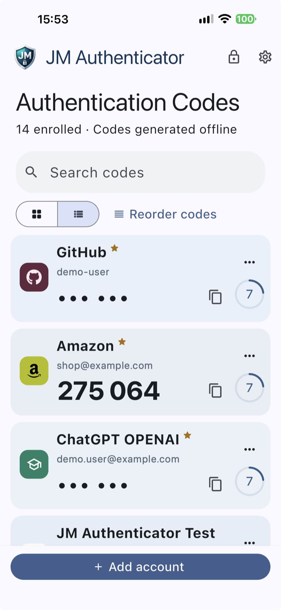
Revealed codes are hidden again when JM Authenticator moves to the background.
Copying a verification code
- Tap the copy icon beside the account. You don’t need to reveal the code first.
- A confirmation shows the account name and Code copied successfully!
- Switch to the app or website that asks for the code and paste it into the sign-in form before the countdown ends.
As the confirmation says, the clipboard clears within 30 seconds or when the code expires. Copied codes are not shared with your other devices.
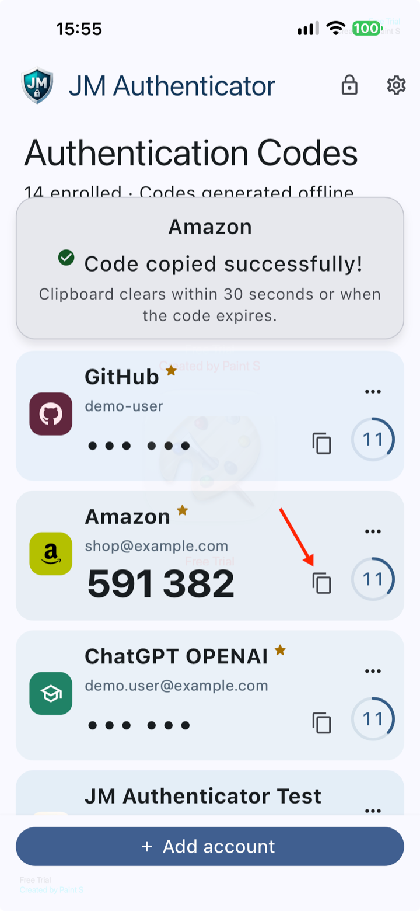
Searching for an account
- Tap Search codes at the top of the Home screen.
- Type the service or account name, for example Amazon.
- Only matching accounts are shown, with their codes, copy icon and countdown.
- Delete the search text to show all accounts again.
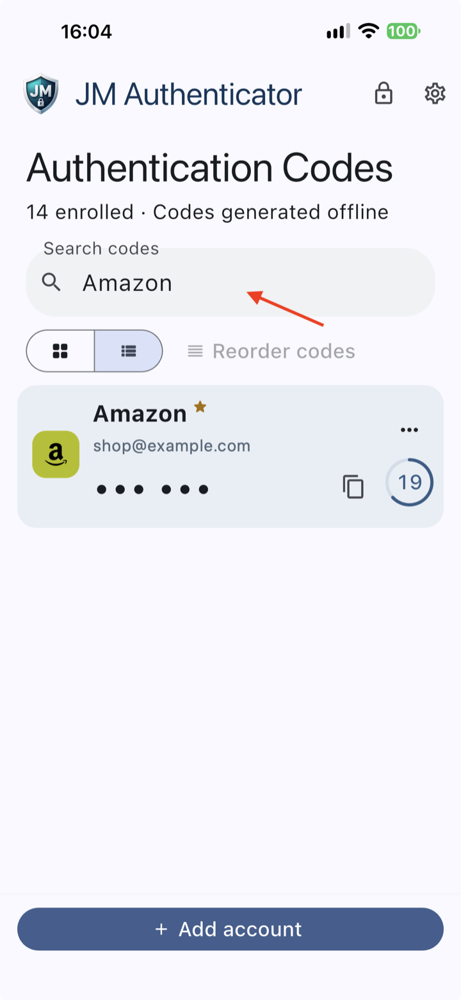
While a search is active, Reorder codes is unavailable.
Switching between List and Grid views
Use the view selector — the two buttons next to Reorder codes — to change the layout:
- List view
- Shows account cards with their codes, copy icons and countdowns, as in the previous screenshots.
- Grid view
- Shows a compact overview of all accounts in three columns, with their icons and names, and the number of accounts at the top. Tap an account to see its full identifier and code.
In Grid view, the magnifying glass opens the search, and the same view selector switches back to List view. JM Authenticator remembers your choice.
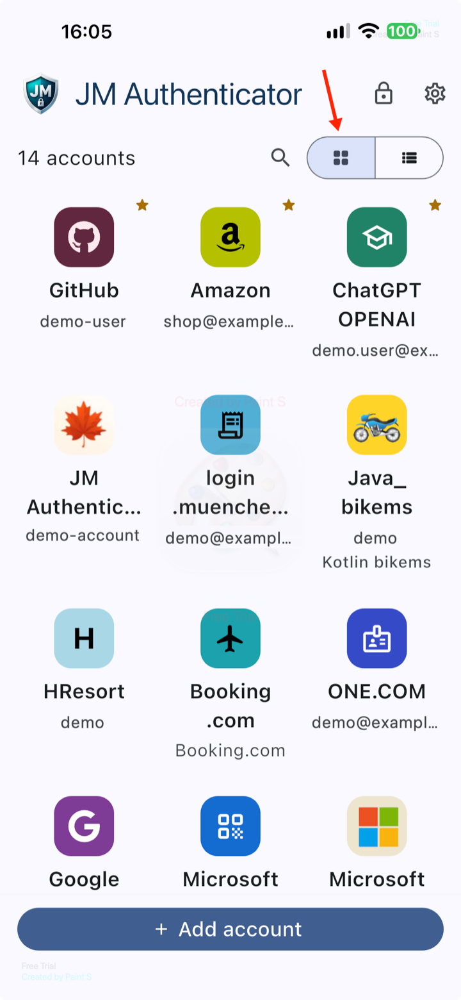
If a service rejects valid-looking codes, check that your device’s date, time and time zone are set automatically.
04. Create an encrypted backup
JM Authenticator does not provide a cloud backup. Create encrypted backups so that you can recover your accounts if your device is lost or replaced.
- Open Settings and, under Backup & Restore, tap Encrypted backups.

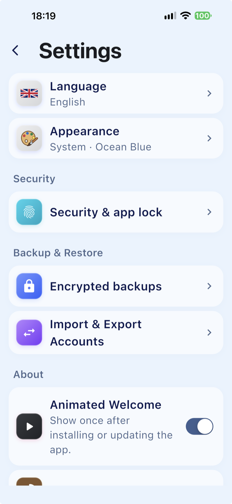
- On Encrypted backups, tap Back Up All Accounts. This creates a password-protected backup of all your accounts and records it in your backup history.

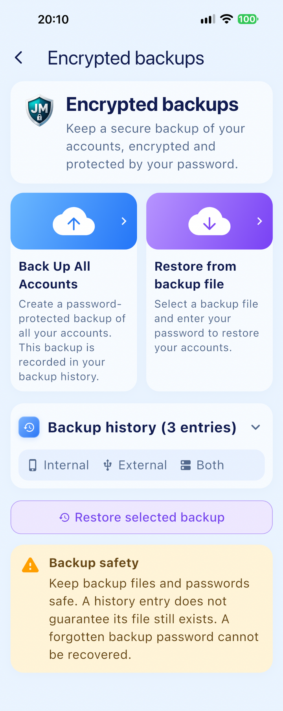
- Under Choose your backup type, open the Backup storage drop-down and select where the backup is saved:
- External backup (Recommended) — saves an encrypted file to a location you choose, such as Files or iCloud Drive.
- Internal backup — saves the backup privately inside the app on this iPhone or iPad. It does not protect against loss of the device and is removed when the app is deleted.
- Both — creates an internal copy and an external copy.

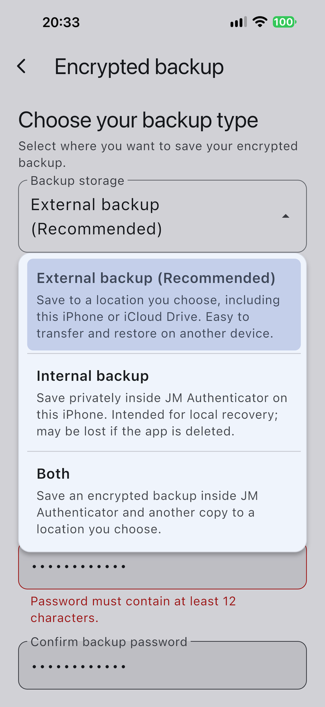
- Keep the suggested Backup filename or enter your own. The
.jmbackupextension is added automatically. Under Protect your backup with a password, enter a Backup password of 12 to 1024 characters and enter it again in Confirm backup password. Use a long, unique password. A shorter password shows Password must contain at least 12 characters. - Tap Create encrypted backup.

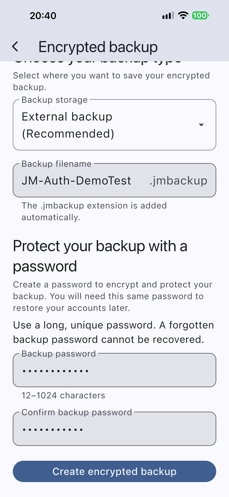
Saving an external backup
- Read Save your external backup. The next window lets you choose where to save your encrypted backup. Tap Continue.

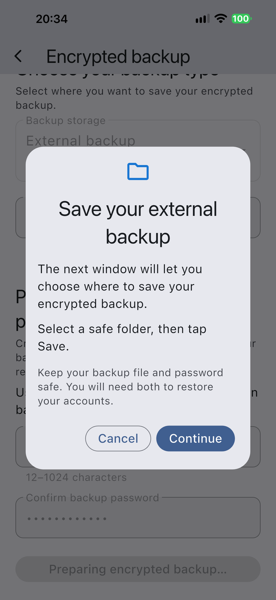
- In the iOS Files window, choose a safe location, such as a folder on your iPhone or in iCloud Drive, and tap Save. The backup filename is shown under Save as.

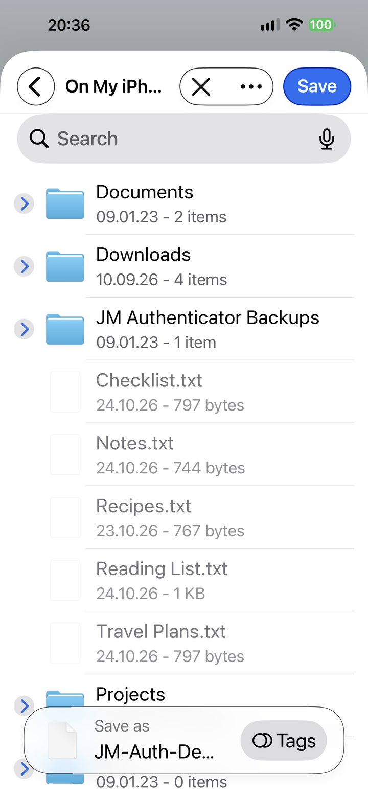
- Check Backup created successfully. It shows the Filename, the Storage type and the number of Accounts in the backup. Tap OK.

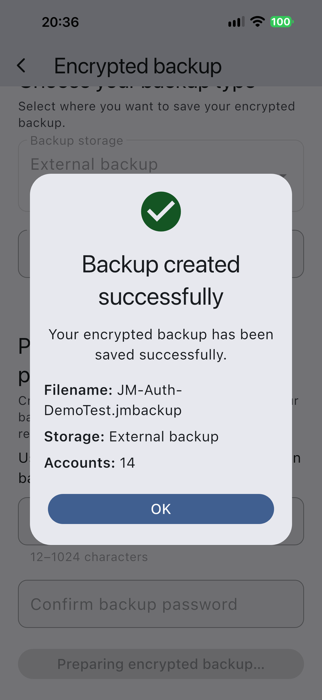
- Back on Encrypted backups, tap Backup history to expand it. The new backup is listed at the top with its filename, date and time, storage type and the number of accounts included.

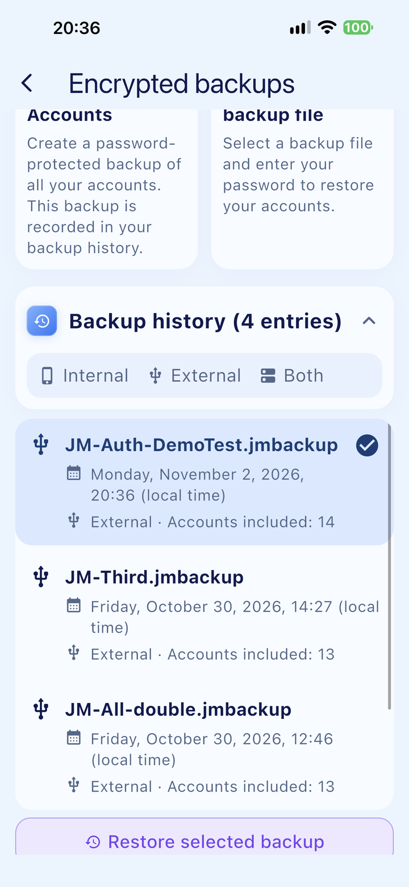
Keep your backup file and its password safe. You need both to restore your accounts. Backup passwords are not saved by the app, and a forgotten backup password cannot be recovered.
05. Restore a backup
Restoring adds accounts from a JM Authenticator encrypted backup. Existing accounts are kept, exact duplicates are skipped, and only the accounts you select are added. Nothing is imported until you verify the file with its password and confirm the restoration.
Choose the backup
- Open Settings and, under Backup & Restore, tap Encrypted backups. There are two ways to restore:
- A · Restore from backup file — select a
.jmbackupfile saved in Files or iCloud Drive. - B · Restore selected backup — choose a backup listed in Backup history.
- A · Restore from backup file — select a
- Choose the backup in one of two ways:
- A — Tap Restore from backup file. In the Files window, go to the location where you saved the backup and select your
.jmbackupfile.
- A — Tap Restore from backup file. In the Files window, go to the location where you saved the backup and select your

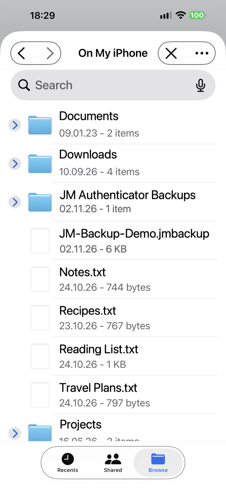
- B — Or tap Backup history to expand it, tap a backup to select it (it is marked with a check mark), then tap Restore selected backup.
- Both options — A and B — open the same Restore encrypted backup screen, which shows the name of the selected backup file. Enter its Backup password and tap Continue. To use a different backup, tap Select another backup file.

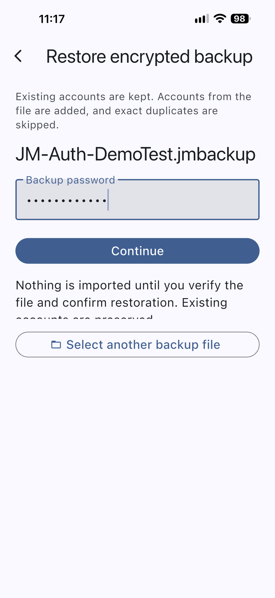
Choose accounts to restore
- After the password is verified, Choose accounts to restore opens. It shows the Selected file and, under Backup content:
- Accounts in backup — all accounts in the file.
- Already in JM Authenticator — accounts you already have.
- Available to restore — new accounts that can be added.

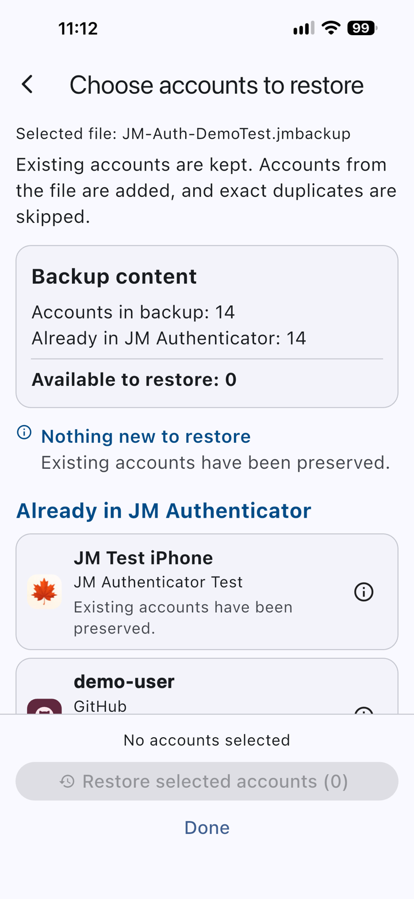
- Scroll through Already in JM Authenticator. Each account you already have is marked Existing accounts have been preserved. These accounts are not restored again and stay unchanged. At the end of the list, Cancel stops the restoration and Select another backup file lets you choose a different backup.

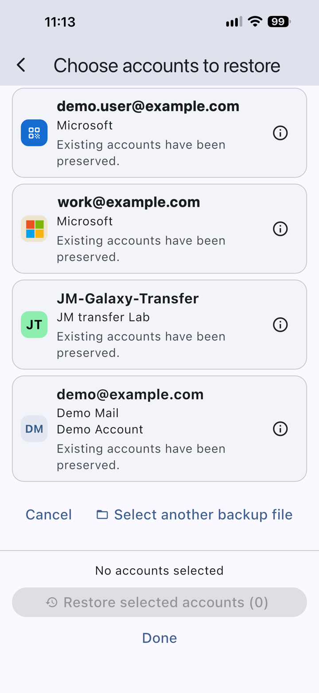
- If Available to restore is greater than 0, select the new accounts you want to add. The bar at the bottom shows how many accounts are selected.
- Tap Restore selected accounts. The button shows the number of selected accounts.
- Review the result shown by JM Authenticator, then tap Done. The restored accounts appear on the Home screen together with your existing accounts.
Duplicate protection
- Existing accounts are preserved. Restoring never removes or replaces an account you already have.
- Exact duplicates are skipped. Accounts that are already in JM Authenticator are listed under Already in JM Authenticator and cannot be restored a second time.
- Only selected accounts are added. Of the accounts available to restore, only those you select are added.
Example: nothing new to restore
In the screenshots, the backup JM-Auth-DemoTest.jmbackup is restored while all of its accounts are already in JM Authenticator:
- Accounts in backup: 14
- The backup contains 14 accounts.
- Already in JM Authenticator: 14
- All 14 accounts are already enrolled.
- Available to restore: 0
- There are no new accounts to add.
JM Authenticator therefore shows Nothing new to restore. Existing accounts have been preserved. No accounts can be selected, Restore selected accounts (0) stays unavailable, and nothing is changed. Tap Done to leave the screen.
You need both the backup file and its password to restore your accounts. As the Backup safety notice explains, a history entry does not guarantee that its file still exists, and a forgotten backup password cannot be recovered.
06. Import accounts
Open Settings → Import & Export Accounts and choose a source under Import into JM. Imports are processed on your device. Only the accounts you select are added; existing accounts and backups remain unchanged, and duplicates are skipped.

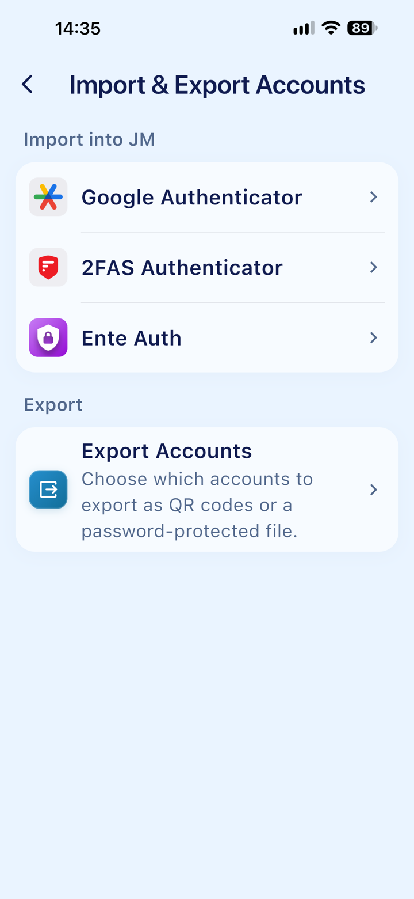
Google Authenticator
Move your accounts from Google Authenticator by scanning its export QR codes or by choosing screenshots of them. Existing accounts and backups remain unchanged.
- On the Home screen, tap the gear icon to open Settings.

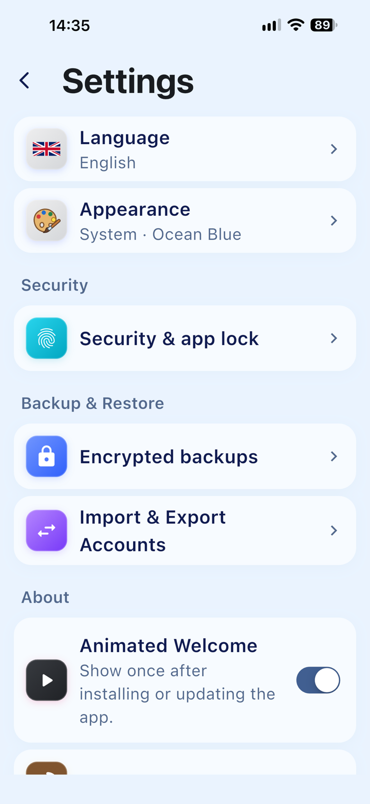
- Under Import into JM, tap Google Authenticator. The screen Import accounts from QR codes or screenshots opens with the buttons Scan a QR code and Choose images. Until you add the first QR code, it shows No QR parts collected. To begin again, tap Start over.

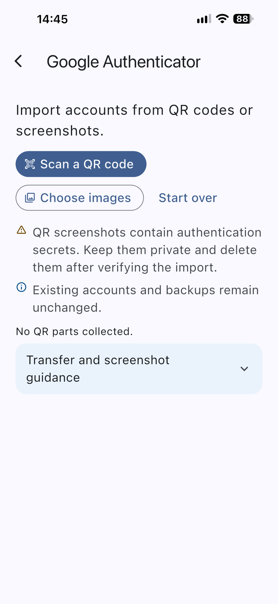
- Add the export QR codes in one of two ways:
- A · Scan a QR code — Scan enrollment QR code opens the camera. Scan one Google Authenticator export QR code, return to the import screen and scan the next part until the batch is complete. A larger export can consist of several QR codes; each scan adds one QR part.

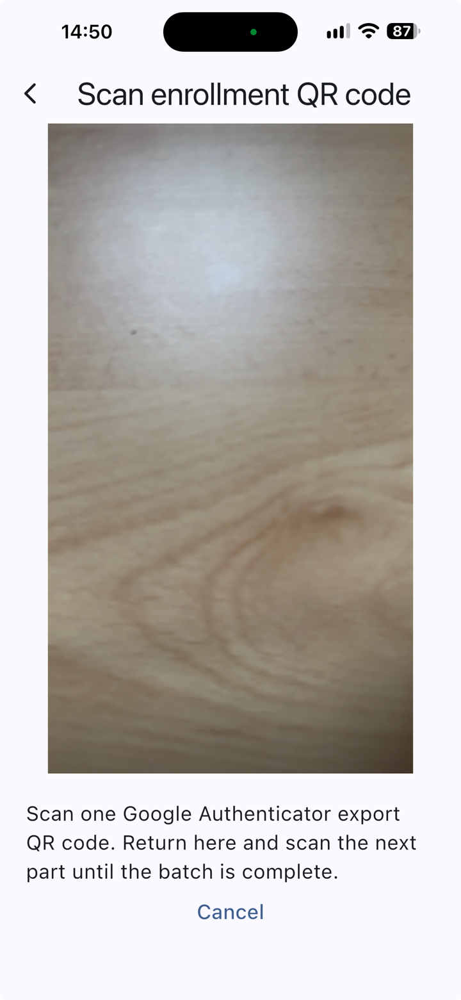
- B · Choose images — Or tap Choose images to select screenshots of the export QR codes that you saved before opening JM Authenticator. The iOS photo picker opens: select up to 32 photos, then tap the check mark.

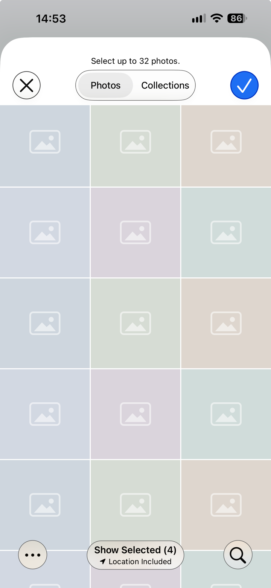
- For help, tap Transfer and screenshot guidance to expand it. It explains that:
- In Google Authenticator, you open Transfer accounts → Export accounts, unlock, select the accounts and continue.
- You scan every QR code, or select screenshots saved before opening JM Authenticator. Each scan adds one QR part.
- TOTP accounts use a 30-second period.

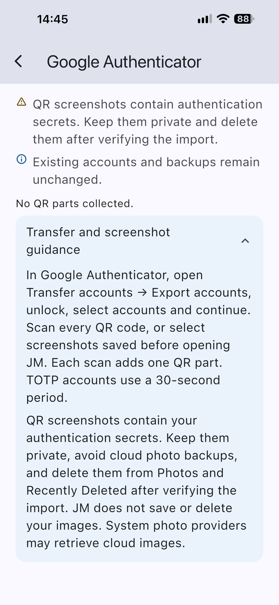
QR screenshots contain your authentication secrets. Keep them private, avoid cloud photo backups, and delete them from Photos and Recently Deleted after verifying the import. JM Authenticator does not save or delete your images.
2FAS Authenticator
Import your accounts from a .2fas backup file created in 2FAS Authenticator, without scanning each QR code. Processing stays on your device.
- Open Settings → Import & Export Accounts and, under Import into JM, tap 2FAS Authenticator. Import from 2FAS explains that processing stays on this device and that existing JM Authenticator accounts and backups remain unchanged — only the new accounts you select are added. Tap Choose .2fas file.

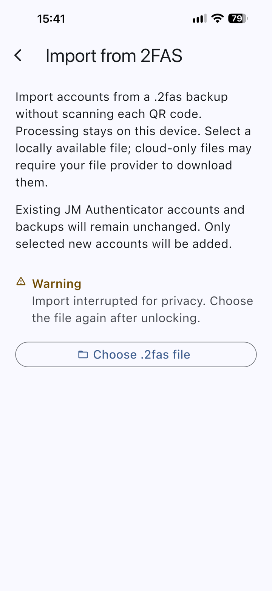
- In the Files window, go to the location of your 2FAS backup, for example iCloud Drive, and select the
.2fasfile. Choose a file that is available on your device; files stored only in the cloud may first have to be downloaded by your file provider.

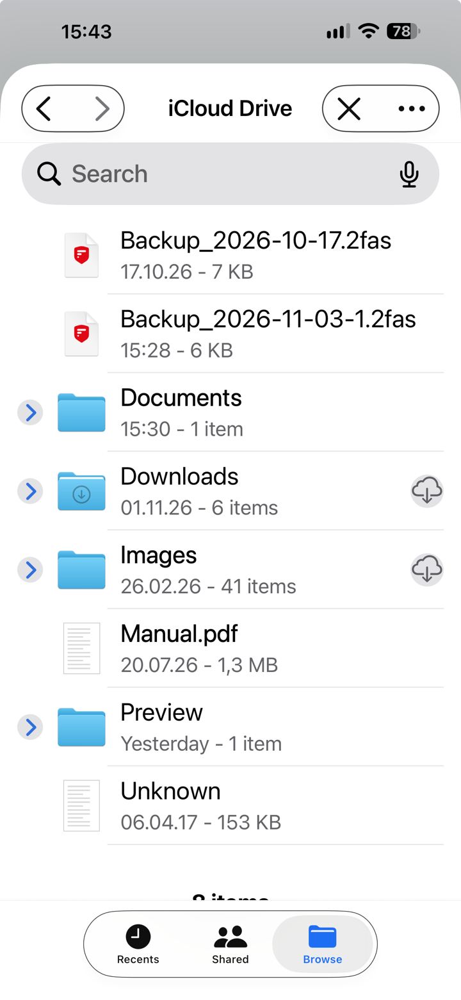
.2fas backups in iCloud Drive. Anonymized demonstration screenshot: the other folder and file names and document previews are examples.- The Selected file is shown at the top. A password-protected
.2fasbackup needs the password you set in 2FAS: enter it in 2FAS backup password and tap Unlock backup. To use a different backup, tap Choose another file.

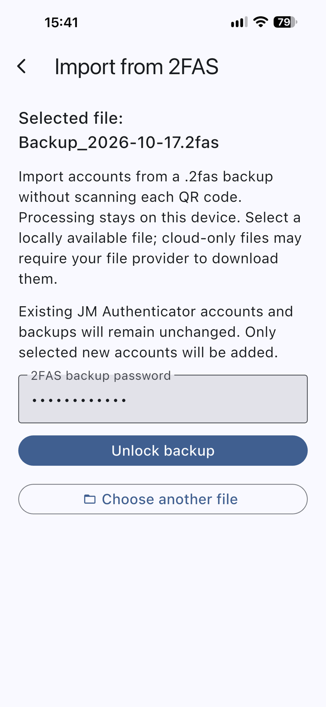
- Choose accounts to import opens. Under Import content, check what the backup contains. In this example:
- Entries: 10 — all entries in the file, of which 9 are Active.
- Already in JM Auth: 6 — accounts you already have. There are no Repeated accounts and nothing In trash.
- Invalid or unsupported: 1 — an entry that cannot be imported.
- Eligible for import: 3 — new accounts that can be added.

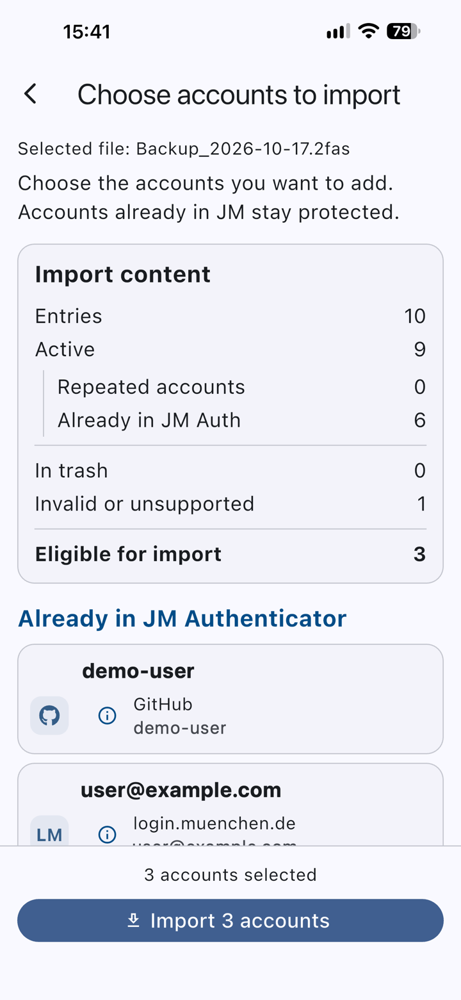
- Accounts you already have are listed separately under Already in JM Authenticator. They have no checkbox, are not imported again and stay unchanged. Below them, Import accounts offers Select all and Deselect all.

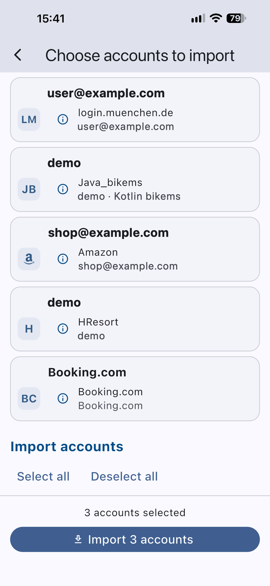
- Under Import accounts, each eligible account is marked Ready and has a checkbox. Tap a checkbox to select or deselect that account. An entry marked Invalid details, such as Entry 1, cannot be selected or imported. The bar at the bottom shows how many accounts are selected; tap Import 3 accounts to import the selected accounts. The number on the button follows your selection.

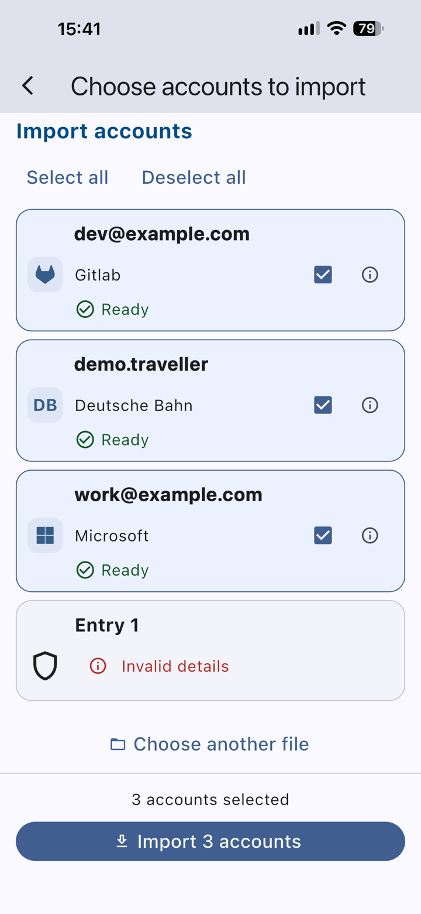
Import interrupted for privacy. If JM Authenticator locks while a 2FAS import is in progress, the import is stopped and Import from 2FAS shows Import interrupted for privacy. Choose the file again after unlocking. This is not part of a normal import: unlock JM Authenticator, tap Choose .2fas file and start again.
Ente Auth
- Export your accounts from Ente Auth in the Encrypted (recommended) or Plain text format. Plain HTML exports are not supported.
- Choose Ente Auth. Expand Formats and privacy to see the supported formats, then tap Choose Ente export. For an encrypted export, enter the Ente export password.
- Under Choose accounts to import, select the accounts and import them.
12-import-ente.png
Only standard TOTP accounts can be imported; HOTP, Steam and other unsupported types are skipped. Because other apps can change their export formats, not every version of their exports may be supported.
QR screenshots and export files contain your authentication secrets. After you have checked the import, delete them, including from Recently Deleted in Photos.
07. Need more help?
Visit JM Authenticator Support or email support@jegprofil.info. Never send secret keys, codes, backup files, backup passwords or QR codes.
To learn how your data is handled, read the JM Authenticator Privacy Policy.